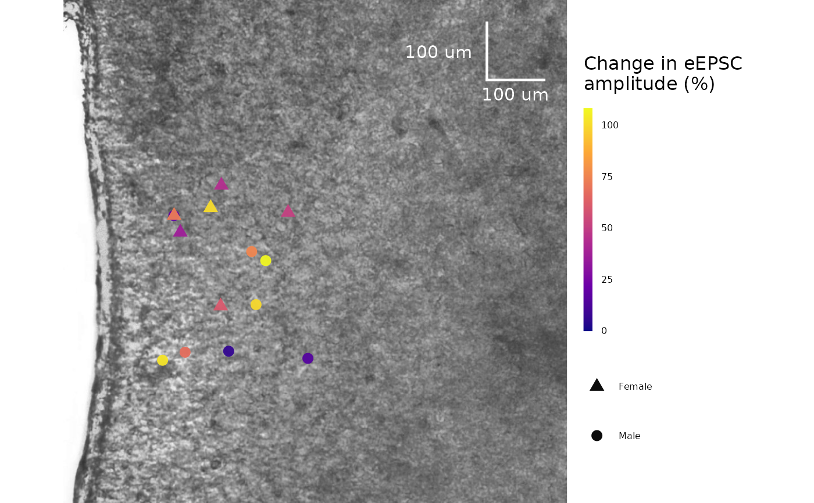

This function enables you to plot your cell locations on a coordinate system with an image of a brain slice in the background. The points are coloured by the percent change in evoked or spontaneous current amplitude over time.
Usage
plot_cell_coordinates_data(
data,
background_slice_filename,
background_slice_height = 800,
background_slice_width = 800,
plot_category,
include_all_treatments = "yes",
list_of_treatments = NULL,
scale_bar_x_start = 700,
scale_bar_x_length = 100,
scale_bar_y_start = 100,
scale_bar_y_length = 100,
scale_bar_units = "um",
include_scale_bar_label = "yes",
scale_bar_thickness = 0.8,
scale_bar_colour = "white",
scale_bar_label_size = 4,
geom_point_size = 3,
geom_text_family = "",
geom_point_alpha = 0.95,
legend_width = 0.4,
legend_title = "Change in eEPSC\namplitude (%)",
legend_text_size = 6,
legend_title_size = 12,
legend_title_bottom_margin = 10,
legend_height = 10,
filename_suffix,
save_plot_png = "no",
theme_options,
ggplot_theme = NULL,
...
)Arguments
- data
A dataframe generated from
make_summary_EPSC_data(). Ifcurrent_type = "eEPSC", this must be the percent change dataframe generated frommake_summary_EPSC_data(). Use$percent_changeto access this dataframe. Ifcurrent_type = "sEPSC", this can either be$percent_change_amplitudeor$percent_change_frequency.- background_slice_filename
A character value describing the location of the background slice image. This may be a png or a jpeg. It must contain just the background slice, and the height and width must be known values in
scale_bar_units.- background_slice_height
The height of the background slice image in
scale_bar_units. Defaults to800.- background_slice_width
The width of the background slice image in
scale_bar_units. Defaults to800.- plot_category
A numeric value specifying the category, which can be used to differentiate different protocol types. In the sample dataset for this package,
plot_category == 2represents experiments where insulin was applied continuously after a 5-minute baseline period.- include_all_treatments
A character (
"yes"or"no") specifying if the plot will include data from all treatments. If"no", you must specify a list of treatments inlist_of_treatments.- list_of_treatments
A list of character values describing the treatments that will be in the plot. Defaults to
NULL, since include_all_treatments is"yes"by default.- scale_bar_x_start
The starting location of the scale bar on the x-axis in
scale_bar_units. Defaults to700.- scale_bar_x_length
The length of the scale bar on the x-axis in
scale_bar_units.- scale_bar_y_start
The starting location of the scale bar on the y-axis in
scale_bar_units. Defaults to100.- scale_bar_y_length
The length of the scale bar on the y-axis in
scale_bar_units.- scale_bar_units
The units of the scale bar. Often, it will be "um".
- include_scale_bar_label
A character value (
"yes"or"no") describing whether to include text labels on the scale bar. If"yes", the text annotation values will be pulled fromscale_bar_x_lengthandscale_bar_y_length.- scale_bar_thickness
A numeric value describing the thickness of the scale bar. Defaults to 0.8.
- scale_bar_colour
A character value (named colour of hex value) describing the colour of the scale bar. Defaults to
"black".- scale_bar_label_size
A numeric value describing the size of the scale bar annotation text. Defaults to 4.
- geom_point_size
A numeric value describing the size of the points. Defaults to 3.
- geom_text_family
A character value describing the font family used for the scale bar annotations. Defaults to "", but can be replaced with a named font. Use a package like
extrafontto load system fonts into R.- geom_point_alpha
A numeric value describing the transparency of the points. Defaults to 0.95, but can be reduced to better view the brain slice below.
- legend_width
The width of the legend colourbar. Defaults to 0.4.
- legend_title
A character value for the colourbar title. Defaults to "Change in eEPSC amplitude (%)"
- legend_text_size
The size of the text labels used in the legend. Defaults to 6.
- legend_title_size
A numeric value for the size of the colourbar legend title. Defaults to 12.
- legend_title_bottom_margin
A numeric value for the bottom margin of the colourbar legend title. Defaults to 10.
- legend_height
The height of the legend colourbar. Defaults to 10.
- filename_suffix
Optional character value to add a suffix to the filename of the .png file created with this plot. Could be useful if you have specified a custom list of treatments.
- save_plot_png
A character (
"yes"or"no"). If"yes", the plot will be saved as a .png usingggsave(). The filepath depends on the current type, but they will all go in subfolders belowFigures/in your project directory.- theme_options
A dataframe containing theme options, defaults to
sample_theme_options. See sample_theme_options for an example of what this dataframe should look like and how you can customize these values.- ggplot_theme
The name of a ggplot theme or your custom theme. This will be added as a layer to a ggplot object. The default is
patchclampplotteR_theme(), but other valid entries includetheme_bw(),theme_classic()or the name of a custom ggplot theme stored as an object.- ...
Additional arguments passed to
ggplot2::scale_color_viridis_c()such asbegin,end,optionanddirection.
Value
A ggplot object. If save_plot_png == "yes", it will also generate
a .png file in Figures/Cell-coordinates-plot. The .png filename will
contain the plot_category.
Examples
plot_cell_coordinates_data(
data = sample_summary_eEPSC_df$percent_change_data,
background_slice_filename = import_ext_data("DMH-brain-slice.jpg"),
plot_category = 2,
option = "plasma",
theme_options = sample_theme_options
)
